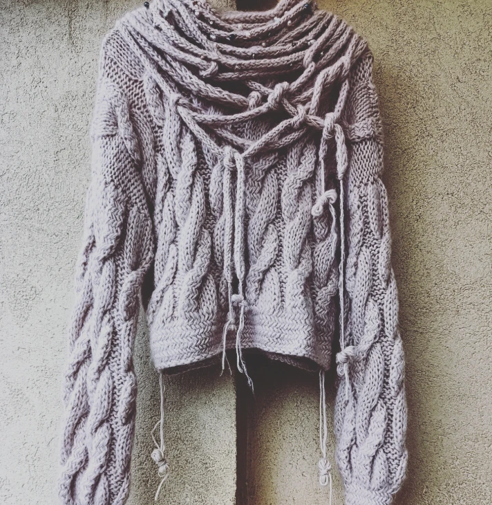

Details
- Material
- Wool, with beads
- Edition
- Unique
- Knit
- Heavy cables; cropped body, long sleeves
- Cuffs
- Deep, gathered at the wrist
- Collar
- A cowl of knitted cords, looped, knotted and beaded
- Ties
- Short cords at the hem, knotted at the ends
- Care
- Wash cold by hand and dry flat